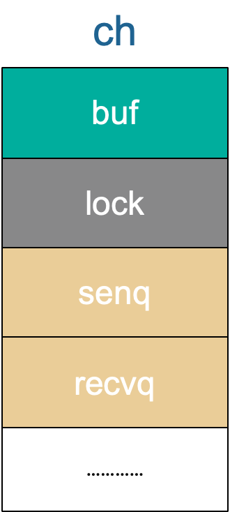
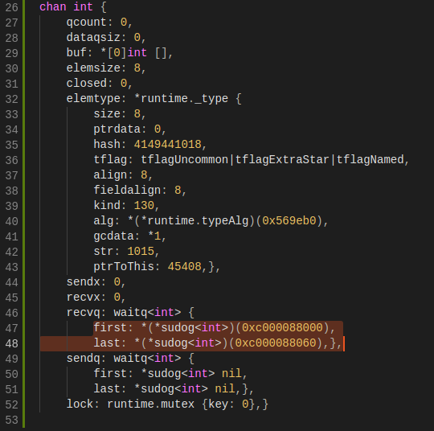
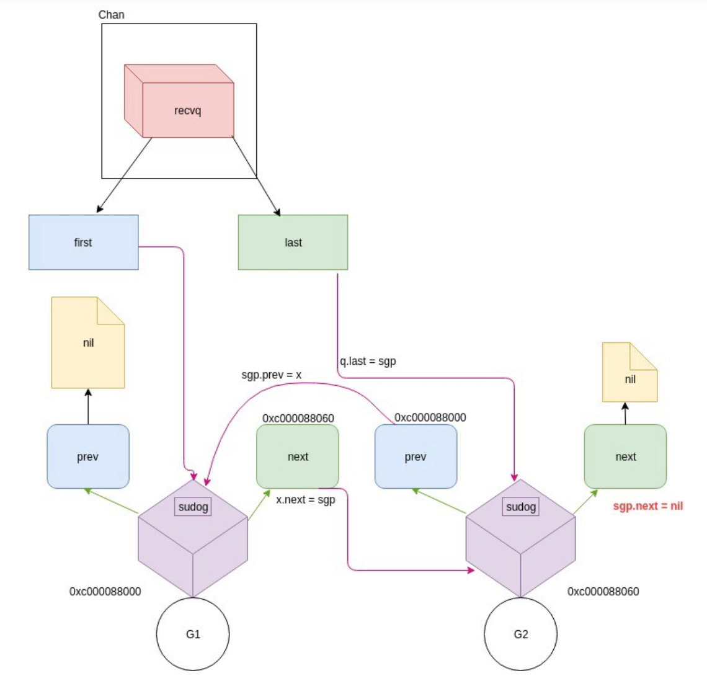
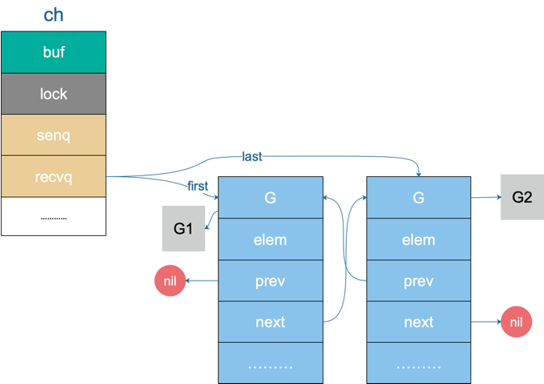
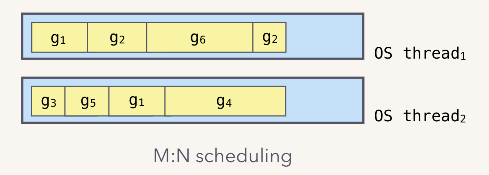
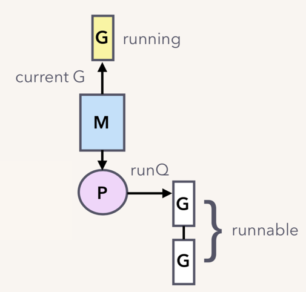
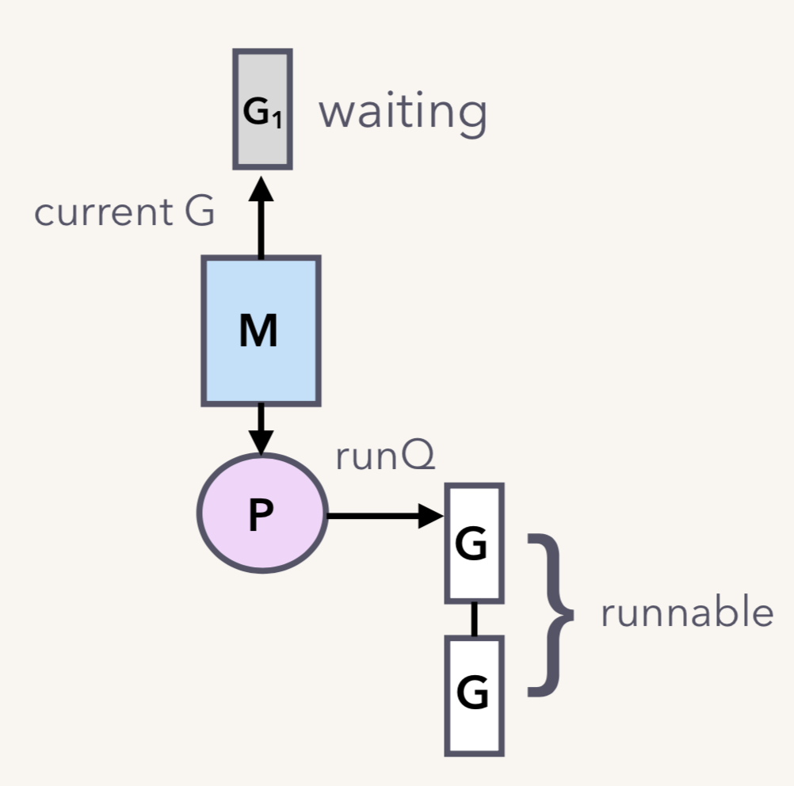
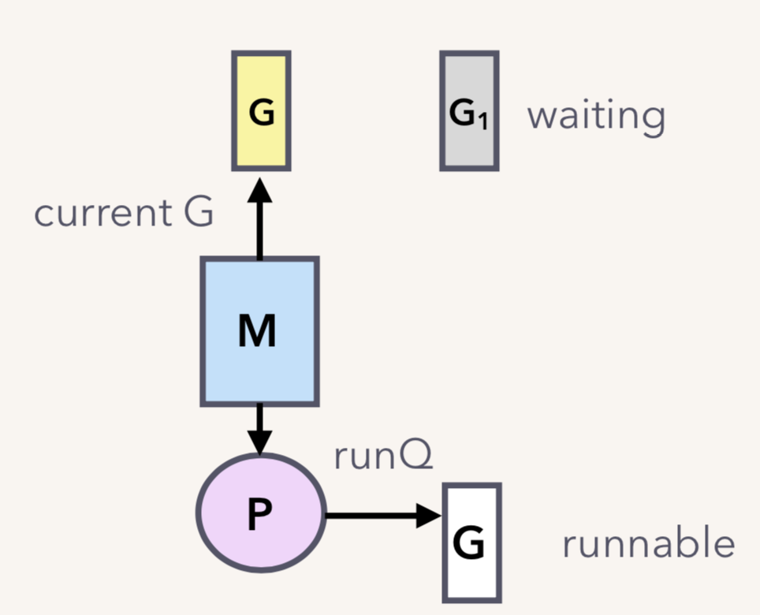

源码分析
#
我们先来看一下接收相关的源码。在清楚了接收的具体过程之后，再根据一个实际的例子来具体研究。
接收操作有两种写法，一种带 “ok”，反应 channel 是否关闭；一种不带 “ok”，这种写法，当接收到相应类型的零值时无法知道是真实的发送者发送过来的值，还是 channel 被关闭后，返回给接收者的默认类型的零值。两种写法，都有各自的应用场景。
经过编译器的处理后，这两种写法最后对应源码里的这两个函数：
1
2
3
4
5
6
7
8
9
|
// entry points for <- c from compiled code
func chanrecv1(c *hchan, elem unsafe.Pointer) {
chanrecv(c, elem, true)
}
func chanrecv2(c *hchan, elem unsafe.Pointer) (received bool) {
_, received = chanrecv(c, elem, true)
return
}
|
chanrecv1 函数处理不带 “ok” 的情形，chanrecv2 则通过返回 “received” 这个字段来反应 channel 是否被关闭。接收值则比较特殊，会“放到”参数 elem 所指向的地址了，这很像 C/C++ 里的写法。如果代码里忽略了接收值，这里的 elem 为 nil。
无论如何，最终转向了 chanrecv 函数：
1
2
3
4
5
6
7
8
9
10
11
12
13
14
15
16
17
18
19
20
21
22
23
24
25
26
27
28
29
30
31
32
33
34
35
36
37
38
39
40
41
42
43
44
45
46
47
48
49
50
51
52
53
54
55
56
57
58
59
60
61
62
63
64
65
66
67
68
69
70
71
72
73
74
75
76
77
78
79
80
81
82
83
84
85
86
87
88
89
90
91
92
93
94
95
96
97
98
99
100
101
102
103
104
105
106
107
108
109
110
111
112
113
114
115
116
117
118
119
120
121
122
123
124
125
126
127
128
129
130
131
132
133
134
135
136
137
138
139
140
141
142
143
144
145
146
147
148
|
// 位于 src/runtime/chan.go
// chanrecv 函数接收 channel c 的元素并将其写入 ep 所指向的内存地址。
// 如果 ep 是 nil，说明忽略了接收值。
// 如果 block == false，即非阻塞型接收，在没有数据可接收的情况下，返回 (false, false)
// 否则，如果 c 处于关闭状态，将 ep 指向的地址清零，返回 (true, false)
// 否则，用返回值填充 ep 指向的内存地址。返回 (true, true)
// 如果 ep 非空，则应该指向堆或者函数调用者的栈
func chanrecv(c *hchan, ep unsafe.Pointer, block bool) (selected, received bool) {
// 省略 debug 内容 …………
// 如果是一个 nil 的 channel
if c == nil {
// 如果不阻塞，直接返回 (false, false)
if !block {
return
}
// 否则，接收一个 nil 的 channel，goroutine 挂起
gopark(nil, nil, "chan receive (nil chan)", traceEvGoStop, 2)
// 不会执行到这里
throw("unreachable")
}
// 在非阻塞模式下，快速检测到失败，不用获取锁，快速返回
// 当我们观察到 channel 没准备好接收：
// 1. 非缓冲型，等待发送列队 sendq 里没有 goroutine 在等待
// 2. 缓冲型，但 buf 里没有元素
// 之后，又观察到 closed == 0，即 channel 未关闭。
// 因为 channel 不可能被重复打开，所以前一个观测的时候 channel 也是未关闭的，
// 因此在这种情况下可以直接宣布接收失败，返回 (false, false)
if !block && (c.dataqsiz == 0 && c.sendq.first == nil ||
c.dataqsiz > 0 && atomic.Loaduint(&c.qcount) == 0) &&
atomic.Load(&c.closed) == 0 {
return
}
var t0 int64
if blockprofilerate > 0 {
t0 = cputicks()
}
// 加锁
lock(&c.lock)
// channel 已关闭，并且循环数组 buf 里没有元素
// 这里可以处理非缓冲型关闭 和 缓冲型关闭但 buf 无元素的情况
// 也就是说即使是关闭状态，但在缓冲型的 channel，
// buf 里有元素的情况下还能接收到元素
if c.closed != 0 && c.qcount == 0 {
if raceenabled {
raceacquire(unsafe.Pointer(c))
}
// 解锁
unlock(&c.lock)
if ep != nil {
// 从一个已关闭的 channel 执行接收操作，且未忽略返回值
// 那么接收的值将是一个该类型的零值
// typedmemclr 根据类型清理相应地址的内存
typedmemclr(c.elemtype, ep)
}
// 从一个已关闭的 channel 接收，selected 会返回true
return true, false
}
// 等待发送队列里有 goroutine 存在，说明 buf 是满的
// 这有可能是：
// 1. 非缓冲型的 channel
// 2. 缓冲型的 channel，但 buf 满了
// 针对 1，直接进行内存拷贝（从 sender goroutine -> receiver goroutine）
// 针对 2，接收到循环数组头部的元素，并将发送者的元素放到循环数组尾部
if sg := c.sendq.dequeue(); sg != nil {
// Found a waiting sender. If buffer is size 0, receive value
// directly from sender. Otherwise, receive from head of queue
// and add sender's value to the tail of the queue (both map to
// the same buffer slot because the queue is full).
recv(c, sg, ep, func() { unlock(&c.lock) }, 3)
return true, true
}
// 缓冲型，buf 里有元素，可以正常接收
if c.qcount > 0 {
// 直接从循环数组里找到要接收的元素
qp := chanbuf(c, c.recvx)
// …………
// 代码里，没有忽略要接收的值，不是 "<- ch"，而是 "val <- ch"，ep 指向 val
if ep != nil {
typedmemmove(c.elemtype, ep, qp)
}
// 清理掉循环数组里相应位置的值
typedmemclr(c.elemtype, qp)
// 接收游标向前移动
c.recvx++
// 接收游标归零
if c.recvx == c.dataqsiz {
c.recvx = 0
}
// buf 数组里的元素个数减 1
c.qcount--
// 解锁
unlock(&c.lock)
return true, true
}
if !block {
// 非阻塞接收，解锁。selected 返回 false，因为没有接收到值
unlock(&c.lock)
return false, false
}
// 接下来就是要被阻塞的情况了
// 构造一个 sudog
gp := getg()
mysg := acquireSudog()
mysg.releasetime = 0
if t0 != 0 {
mysg.releasetime = -1
}
// 待接收数据的地址保存下来
mysg.elem = ep
mysg.waitlink = nil
gp.waiting = mysg
mysg.g = gp
mysg.selectdone = nil
mysg.c = c
gp.param = nil
// 进入channel 的等待接收队列
c.recvq.enqueue(mysg)
// 将当前 goroutine 挂起
goparkunlock(&c.lock, "chan receive", traceEvGoBlockRecv, 3)
// 被唤醒了，接着从这里继续执行一些扫尾工作
if mysg != gp.waiting {
throw("G waiting list is corrupted")
}
gp.waiting = nil
if mysg.releasetime > 0 {
blockevent(mysg.releasetime-t0, 2)
}
closed := gp.param == nil
gp.param = nil
mysg.c = nil
releaseSudog(mysg)
return true, !closed
}
|
上面的代码注释地比较详细了，你可以对着源码一行行地去看，我们再来详细看一下。
-
如果 channel 是一个空值（nil），在非阻塞模式下，会直接返回。在阻塞模式下，会调用 gopark 函数挂起 goroutine，这个会一直阻塞下去。因为在 channel 是 nil 的情况下，要想不阻塞，只有关闭它，但关闭一个 nil 的 channel 又会发生 panic，所以没有机会被唤醒了。更详细地可以在 closechan 函数的时候再看。
-
和发送函数一样，接下来搞了一个在非阻塞模式下，不用获取锁，快速检测到失败并且返回的操作。顺带插一句，我们平时在写代码的时候，找到一些边界条件，快速返回，能让代码逻辑更清晰，因为接下来的正常情况就比较少，更聚焦了，看代码的人也更能专注地看核心代码逻辑了。
1
2
3
4
5
6
|
// 在非阻塞模式下，快速检测到失败，不用获取锁，快速返回 (false, false)
if !block && (c.dataqsiz == 0 && c.sendq.first == nil ||
c.dataqsiz > 0 && atomic.Loaduint(&c.qcount) == 0) &&
atomic.Load(&c.closed) == 0 {
return
}
|
当我们观察到 channel 没准备好接收：
- 非缓冲型，等待发送列队里没有 goroutine 在等待
- 缓冲型，但 buf 里没有元素
之后，又观察到 closed == 0，即 channel 未关闭。
因为 channel 不可能被重复打开，所以前一个观测的时候， channel 也是未关闭的，因此在这种情况下可以直接宣布接收失败，快速返回。因为没被选中，也没接收到数据，所以返回值为 (false, false)。
-
接下来的操作，首先会上一把锁，粒度比较大。如果 channel 已关闭，并且循环数组 buf 里没有元素。对应非缓冲型关闭和缓冲型关闭但 buf 无元素的情况，返回对应类型的零值，但 received 标识是 false，告诉调用者此 channel 已关闭，你取出来的值并不是正常由发送者发送过来的数据。但是如果处于 select 语境下，这种情况是被选中了的。很多将 channel 用作通知信号的场景就是命中了这里。
-
接下来，如果有等待发送的队列，说明 channel 已经满了，要么是非缓冲型的 channel，要么是缓冲型的 channel，但 buf 满了。这两种情况下都可以正常接收数据。
于是，调用 recv 函数：
1
2
3
4
5
6
7
8
9
10
11
12
13
14
15
16
17
18
19
20
21
22
23
24
25
26
27
28
29
30
31
32
33
34
35
36
37
38
39
40
41
42
43
44
45
|
func recv(c *hchan, sg *sudog, ep unsafe.Pointer, unlockf func(), skip int) {
// 如果是非缓冲型的 channel
if c.dataqsiz == 0 {
if raceenabled {
racesync(c, sg)
}
// 未忽略接收的数据
if ep != nil {
// 直接拷贝数据，从 sender goroutine -> receiver goroutine
recvDirect(c.elemtype, sg, ep)
}
} else {
// 缓冲型的 channel，但 buf 已满。
// 将循环数组 buf 队首的元素拷贝到接收数据的地址
// 将发送者的数据入队。实际上这时 recvx 和 sendx 值相等
// 找到接收游标
qp := chanbuf(c, c.recvx)
// …………
// 将接收游标处的数据拷贝给接收者
if ep != nil {
typedmemmove(c.elemtype, ep, qp)
}
// 将发送者数据拷贝到 buf
typedmemmove(c.elemtype, qp, sg.elem)
// 更新游标值
c.recvx++
if c.recvx == c.dataqsiz {
c.recvx = 0
}
c.sendx = c.recvx
}
sg.elem = nil
gp := sg.g
// 解锁
unlockf()
gp.param = unsafe.Pointer(sg)
if sg.releasetime != 0 {
sg.releasetime = cputicks()
}
// 唤醒发送的 goroutine。需要等到调度器的光临
goready(gp, skip+1)
}
|
如果是非缓冲型的，就直接从发送者的栈拷贝到接收者的栈。
1
2
3
4
5
6
|
func recvDirect(t *_type, sg *sudog, dst unsafe.Pointer) {
// dst is on our stack or the heap, src is on another stack.
src := sg.elem
typeBitsBulkBarrier(t, uintptr(dst), uintptr(src), t.size)
memmove(dst, src, t.size)
}
|
否则，就是缓冲型 channel，而 buf 又满了的情形。说明发送游标和接收游标重合了，因此需要先找到接收游标：
1
2
3
4
|
// chanbuf(c, i) is pointer to the i'th slot in the buffer.
func chanbuf(c *hchan, i uint) unsafe.Pointer {
return add(c.buf, uintptr(i)*uintptr(c.elemsize))
}
|
将该处的元素拷贝到接收地址。然后将发送者待发送的数据拷贝到接收游标处。这样就完成了接收数据和发送数据的操作。接着，分别将发送游标和接收游标向前进一，如果发生“环绕”，再从 0 开始。
最后，取出 sudog 里的 goroutine，调用 goready 将其状态改成 “runnable”，待发送者被唤醒，等待调度器的调度。
先构造一个 sudog，接着就是保存各种值了。注意，这里会将接收数据的地址存储到了 elem 字段，当被唤醒时，接收到的数据就会保存到这个字段指向的地址。然后将 sudog 添加到 channel 的 recvq 队列里。调用 goparkunlock 函数将 goroutine 挂起。
接下来的代码就是 goroutine 被唤醒后的各种收尾工作了。
案例分析
#
从 channel 接收和向 channel 发送数据的过程我们均会使用下面这个例子来进行说明：
1
2
3
4
5
6
7
8
9
10
11
12
13
14
15
16
17
18
19
|
func goroutineA(a <-chan int) {
val := <- a
fmt.Println("G1 received data: ", val)
return
}
func goroutineB(b <-chan int) {
val := <- b
fmt.Println("G2 received data: ", val)
return
}
func main() {
ch := make(chan int)
go goroutineA(ch)
go goroutineB(ch)
ch <- 3
time.Sleep(time.Second)
}
|
首先创建了一个无缓冲的 channel，接着启动两个 goroutine，并将前面创建的 channel 传递进去。然后，向这个 channel 中发送数据 3，最后 sleep 1 秒后程序退出。
程序第 14 行创建了一个非缓冲型的 channel，我们只看 chan 结构体中的一些重要字段，来从整体层面看一下 chan 的状态，一开始什么都没有：

接着，第 15、16 行分别创建了一个 goroutine，各自执行了一个接收操作。通过前面的源码分析，我们知道，这两个 goroutine （后面称为 G1 和 G2 好了）都会被阻塞在接收操作。G1 和 G2 会挂在 channel 的 recq 队列中，形成一个双向循环链表。
在程序的 17 行之前，chan 的整体数据结构如下：

buf 指向一个长度为 0 的数组，qcount 为 0，表示 channel 中没有元素。重点关注 recvq 和 sendq，它们是 waitq 结构体，而 waitq 实际上就是一个双向链表，链表的元素是 sudog，里面包含 g 字段，g 表示一个 goroutine，所以 sudog 可以看成一个 goroutine。recvq 存储那些尝试读取 channel 但被阻塞的 goroutine，sendq 则存储那些尝试写入 channel，但被阻塞的 goroutine。
此时，我们可以看到，recvq 里挂了两个 goroutine，也就是前面启动的 G1 和 G2。因为没有 goroutine 接收，而 channel 又是无缓冲类型，所以 G1 和 G2 被阻塞。sendq 没有被阻塞的 goroutine。
recvq 的数据结构如下：

再从整体上来看一下 chan 此时的状态：

G1 和 G2 被挂起了，状态是 WAITING。关于 goroutine 调度器这块不是今天的重点，当然后面肯定会写相关的文章。这里先简单说下，goroutine 是用户态的协程，由 Go runtime 进行管理，作为对比，内核线程由 OS 进行管理。Goroutine 更轻量，因此我们可以轻松创建数万 goroutine。
一个内核线程可以管理多个 goroutine，当其中一个 goroutine 阻塞时，内核线程可以调度其他的 goroutine 来运行，内核线程本身不会阻塞。这就是通常我们说的 M:N 模型：

M:N 模型通常由三部分构成：M、P、G。M 是内核线程，负责运行 goroutine；P 是 context，保存 goroutine 运行所需要的上下文，它还维护了可运行（runnable）的 goroutine 列表；G 则是待运行的 goroutine。M 和 P 是 G 运行的基础。

继续回到例子。假设我们只有一个 M，当 G1（go goroutineA(ch)） 运行到 val := <- a 时，它由本来的 running 状态变成了 waiting 状态（调用了 gopark 之后的结果）：

G1 脱离与 M 的关系，但调度器可不会让 M 闲着，所以会接着调度另一个 goroutine 来运行：

G2 也是同样的遭遇。现在 G1 和 G2 都被挂起了，等待着一个 sender 往 channel 里发送数据，才能得到解救。
参考资料
#
【深入 channel 底层】https://codeburst.io/diving-deep-into-the-golang-channels-549fd4ed21a8
【Kavya在Gopher Con 上关于 channel 的设计，非常好】https://speakerd.s3.amazonaws.com/presentations/10ac0b1d76a6463aa98ad6a9dec917a7/GopherCon_v10.0.pdf